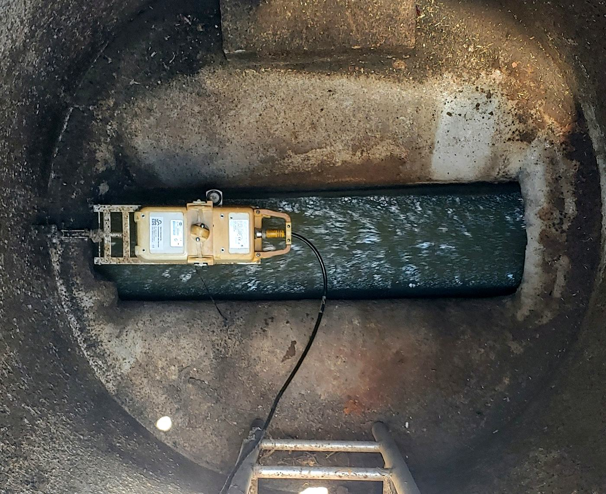
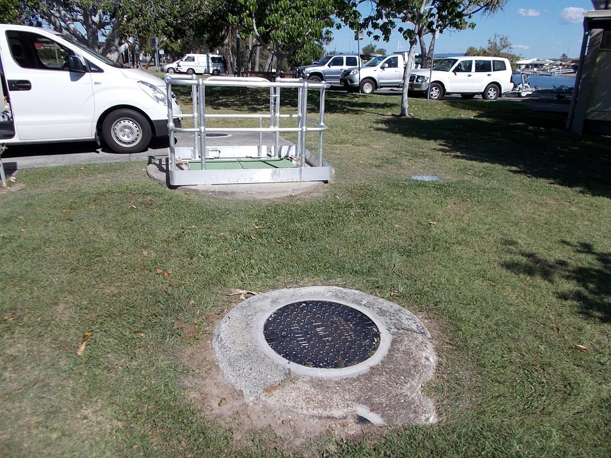
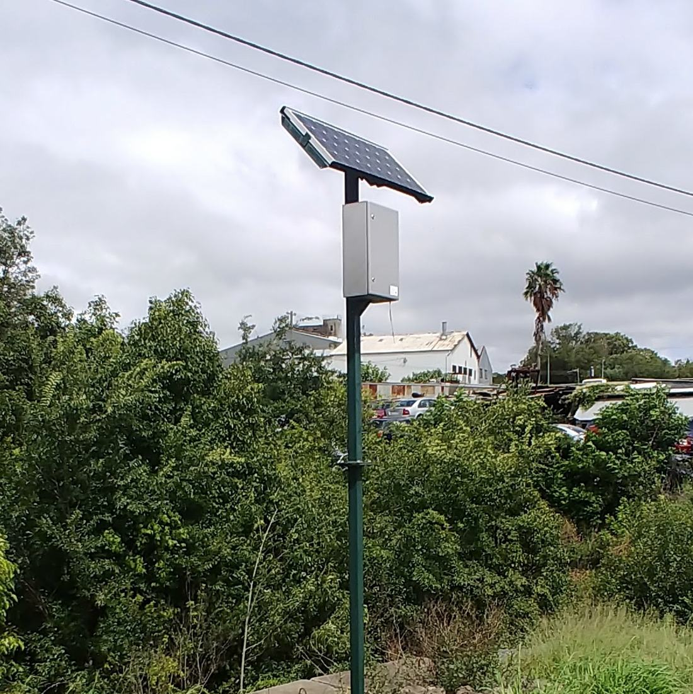
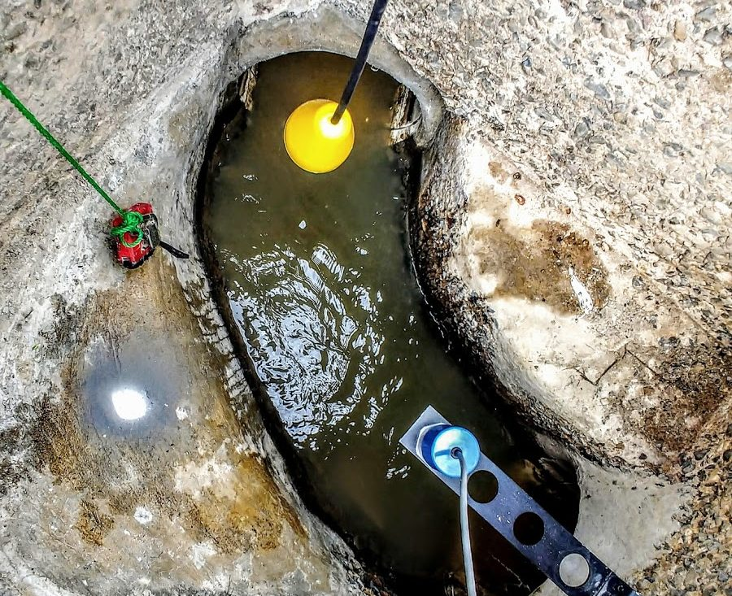
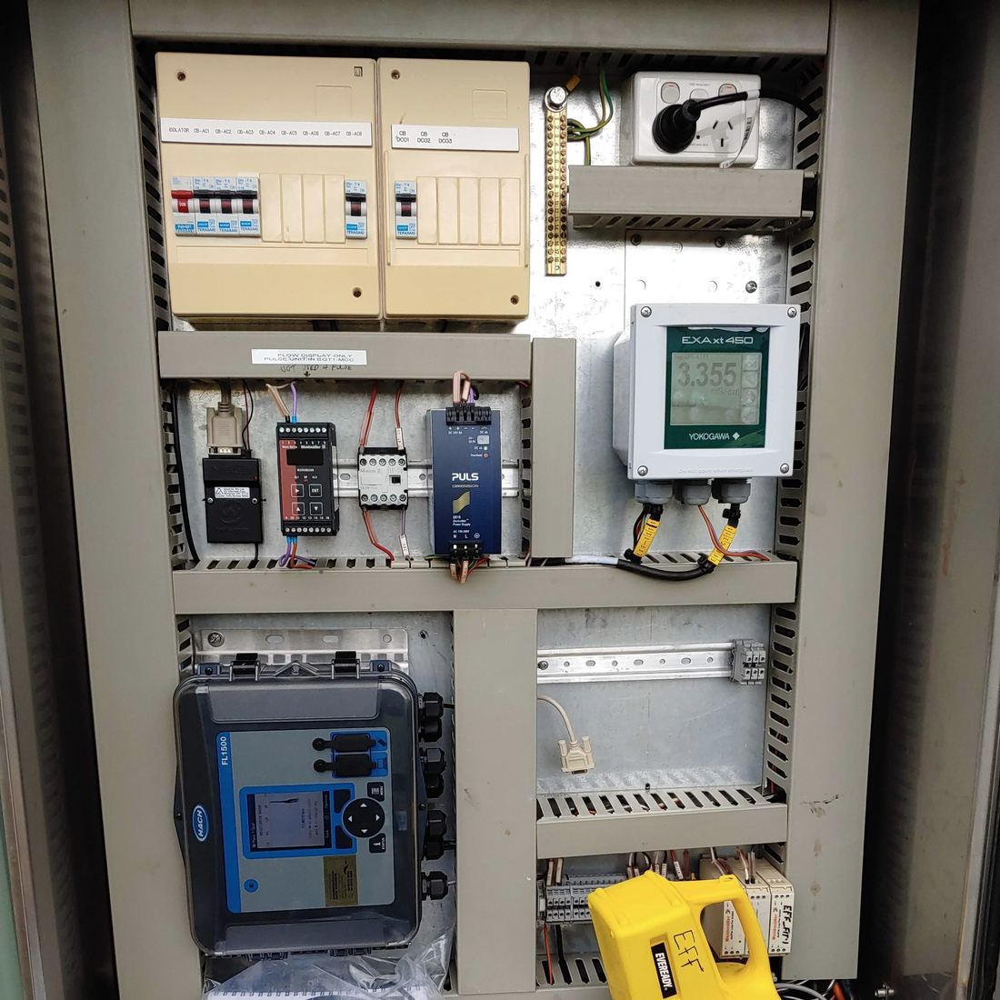

Australian owned and operated since 1991.
Scientists, engineers and technicians who excel in every facet of environmental monitoring and project delivery.
EDS at a glance
- Founded in Queensland. Australian owned ever since.
- 1991
- Offices across Australia
- 4
- Data availability under EDS DaaS
- 99.95%
- Real-time monitoring and alarms
- 24/7
Environmental Data Services (EDS) is an Australian owned and operated company that has been a market leader in providing equipment and services to the water and wastewater industry since 1991.
EDS delivers cutting-edge equipment and specialised services to the water and wastewater industry, as well as the mining, manufacturing, power and processing sectors. Our team comprises scientists, engineers and technicians who excel in all facets of environmental monitoring and project delivery.
Our purpose is straightforward: to empower you with the freedom to take control of your assets and projects. We are driven by a pursuit of discovery and innovation, developing technologies and delivering services that open the door to a world of possibilities.
Our mission
EDS is committed to delivering the highest level of equipment and services, with a core focus on achieving successful client outcomes. The company's mission is rooted in innovation, sustainability and a relentless pursuit of discovery and technological advancement.
EDS empowers businesses and organisations with state-of-the-art tools and insights for making informed environmental decisions, contributing to a more sustainable future.
In the field
The work, as it is.
Sewers, chambers, cabinets and poles: the sites EDS crews instrument, visit and keep reporting.





Instruments, crews and data, from one team.
EDS makes instruments, represents leading manufacturers, installs and maintains them with its own crews, and delivers the data. One team answers for the whole chain.
Manufacturer and representative
EDS designs and builds its own loggers and sensors, and represents leading manufacturers including Detectronic, ORI, Hach and Beadedstream.
Our own field crews
Installation engineers trained in installation, maintenance and calibration, working from four offices across Australia.
Certified for hazardous areas
Intrinsically safe equipment certified under ATEX and IECEx, including Zone 0 instruments for sewer environments.
Data you can defend
ISO compliant data validation, with continuous QA/QC and calibration checks throughout every program.
One platform
Readings arrive in EDS FlowSense, built and supported in Australia, or go straight to your own SCADA and systems.
Your data, always
Full access to the data we collect, in open formats, through FlowSense or by API.
EDS origins
Founded by Graham and Cynthia Harper.
EDS began in Queensland in 1991, following Graham's success with Elpro, and alongside the release of the Pump Station Manager.
Elite Electronics
Graham Harper begins building businesses in electronics.
Elpro
Graham starts Elpro, now one of the world's largest SCADA suppliers.
EDS is founded
Graham and Cynthia Harper establish EDS in Queensland, alongside the release of its flagship product, the Pump Station Manager (PSM).
Bureau of Meteorology loggers
Graham develops the EDS data logger for the Bureau of Meteorology, still in use today, then moves into flow with the Marsh-McBirney range, now Hach.
Amberley Fire Training Facility
EDS builds the facility under Graham's leadership.
Defence facility contract
EDS begins servicing and monitoring the Australian Defence facility, under a contract still in place.
A founder's legacy
Graham sadly passes. Under Cynthia's stewardship, EDS continues to thrive and grow.
Goulburn Valley Water, Kilmore
EDS provided sewer flow monitoring at 10 sites in Kilmore, supporting Goulburn Valley Water's infrastructure management and planning.
Sydney Water panel provider
EDS was awarded a five year panel provider contract to supply sewer flow and level instrumentation to Sydney Water.
North East Water
EDS ran sewer and rainfall monitoring across 15 sites over eight weeks, giving North East Water high resolution data for infrastructure planning and management.
Townsville City Council, Wulguru & Pallarenda
EDS installed and operated sewer monitoring equipment at 34 sites over 12 weeks to inform the council's infrastructure planning and management.
Yarra Valley Water gauge calibrations
EDS calibrated long term sewer flow gauges across multiple Yarra Valley Water sites, so the data stays reliable for hydraulic modelling and infrastructure planning.
Cairns Regional Council monitoring stations
EDS installed and maintains long term sewer monitoring stations, giving the council continuous sewer flow and water quality data to improve wastewater management and environmental sustainability.
Wingecarribee Shire Council
EDS installed 15 short term sewer flow gauges across the Mittagong and Robertson catchments.
Transurban service provider
EDS was awarded a service provider contract with Transurban to service and maintain key tunnel infrastructure.
Australia's largest supplier
EDS has grown to be Australia's largest supplier of equipment for the water and wastewater industry, and was awarded the largest sewer monitoring project in Australia in recent years.
EDS continues to strive to deliver the level of service and professionalism that was part of Graham's founding ethos.Cynthia Harper, Co-founder, Environmental Data Services
Four offices across Australia.
Talk to the people who measure it.
Tell us about your network, site or project. A real person from our team will come back to you.